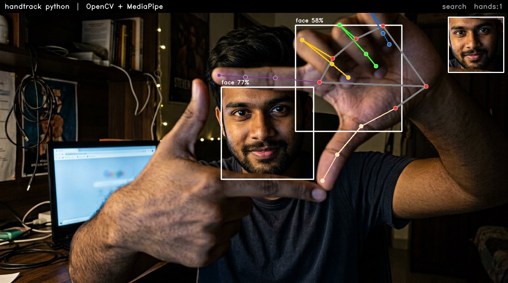

handtrack python · OpenCV + MediaPipe · live demo
Real-time face box + hand skeleton + frame gesture + FACE LOCKED — sob browser ei, kono install lage na 👇
📷 Live demo — tomar nijer camera kono install lage na
…
Camera permission chaiga — allow koro, ar dui haat diye frame banao! 😎
🖼️ Ami banaiyechi Python version er output

Upore: dui haat frame gesture → sobuj FACE LOCKED box, hand skeleton (21 landmark), sadha face box, corner e ROI inset — Python + OpenCV + MediaPipe diye generate.
Gesture guide: dui haat er thumb + index diye boro frame banao → cyan viewfinder 🔲 · frame ta mukher dike anaO → FACE LOCKED · ek haate pinch (OK sign) → chhoto mini-frame.
Shortcut: B blur · G gray · R roi · S screenshot
Nijer laptop e (PyCharm): ZIP download handtrack-python.zip → unzip → PyCharm e Open →
Shortcut: B blur · G gray · R roi · S screenshot
Nijer laptop e (PyCharm): ZIP download handtrack-python.zip → unzip → PyCharm e Open →
pip install -r requirements.txt → python handtrack.py